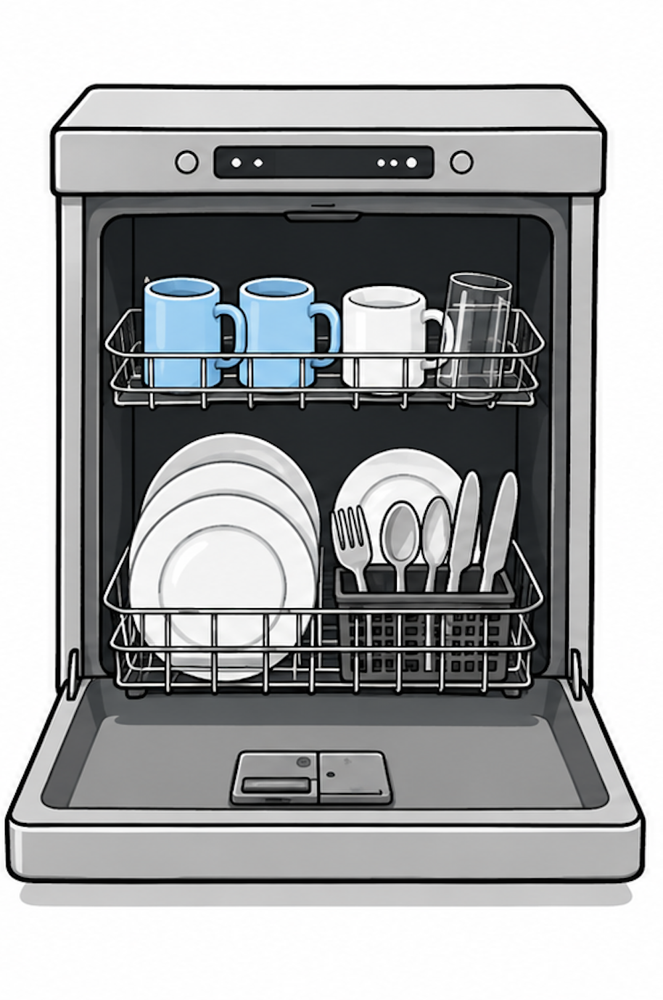
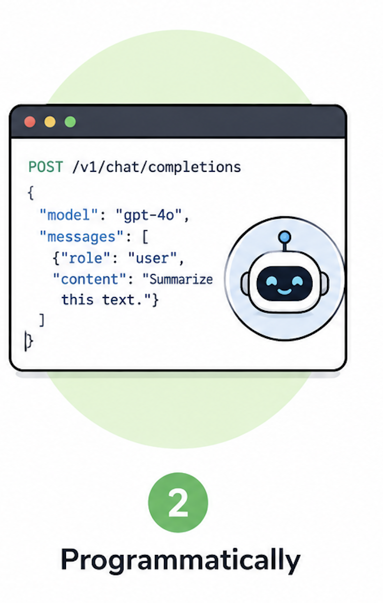
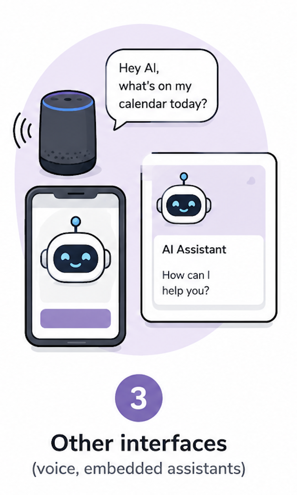
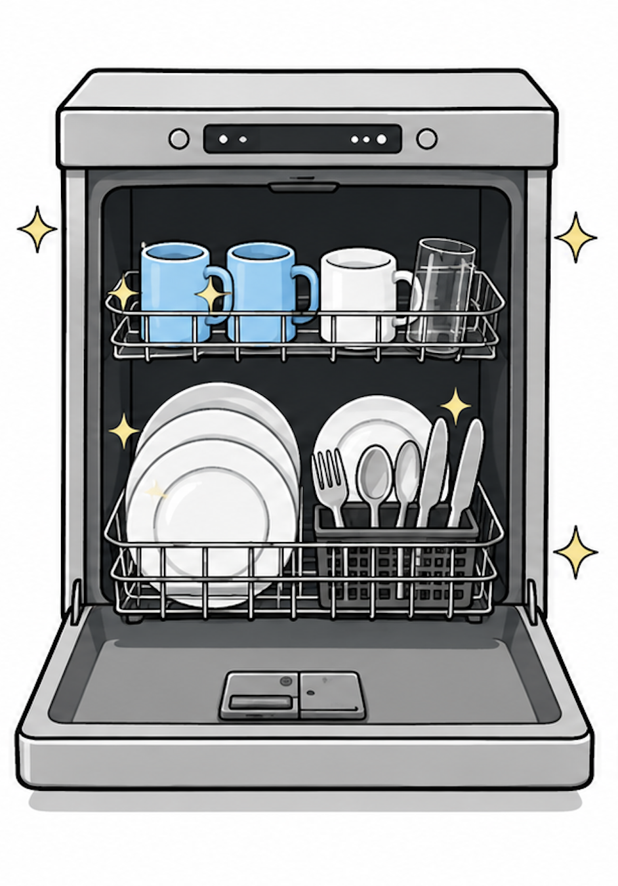
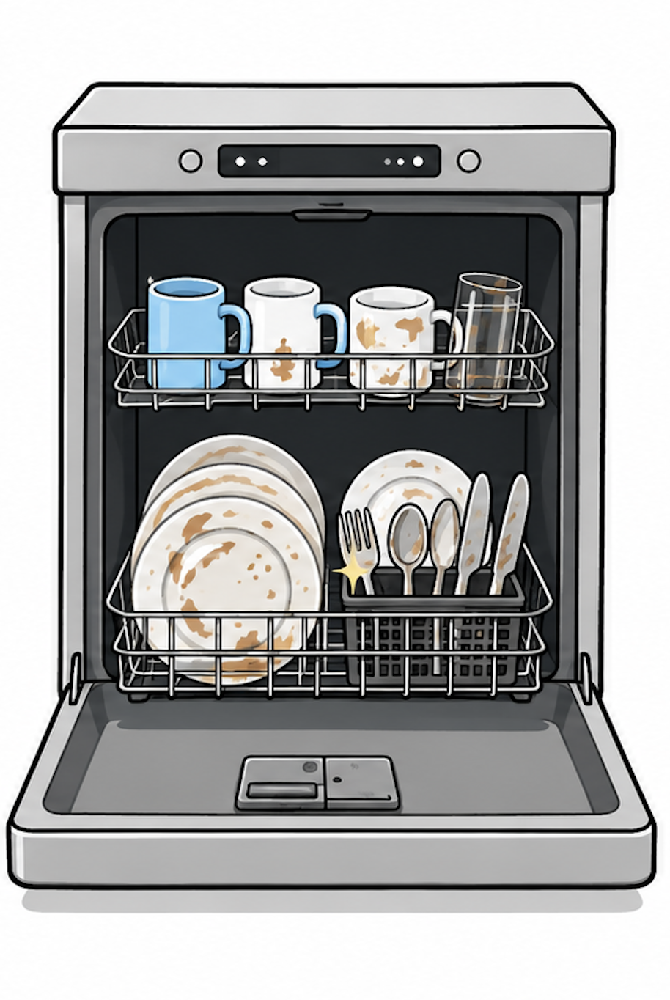
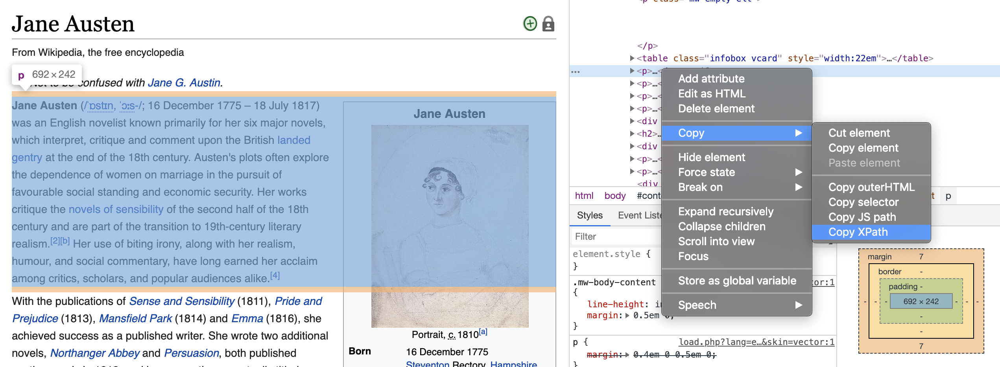

# A tibble: 6 × 4
author_name author_links nationality nationality_llm
<chr> <chr> <chr> <chr>
1 Alexander McCall Smith https://en.wikipedia.org/w… British, Z… Scottish
2 Marcus Pfister https://en.wikipedia.org/w… Swiss Swiss
3 Raymond E. Feist https://en.wikipedia.org/w… American American
4 Timothy Zahn https://en.wikipedia.org/w… American American
5 Andrzej Sapkowski https://en.wikipedia.org/w… Polish Polish
6 Kazuo Iwamura [ja] https://en.wikipedia.org/w… 99999 Japanese
ETC5512
LLMs for data analysis
Lecturer: Kate Saunders
Department of Econometrics and Business Statistics
- ETC5512.Clayton-x@monash.edu
- Lecture 11
- wcd.numbat.space
Today’s lecture
What we’ll cover
We’ll develop your understanding of:
What LLMs are
Different types of data tasks that LLMs can help with
How to use and check LLMs for specific data preparation tasks
Coding Perspective:
Programmatically discuss:
- how to interact with LLMs in R using {ellmer}
Disclaimer
The information presented in these slides reflects the state of AI technology at the time of creation. This field is evolving rapidly.
Acknowledgement
This lecture was adapted from a guest lecture developed and delivered by Dr. Cynthia Huang for Wild Caught Data from 2025.
About LLMs
Generative AI and LLMs
Generative AI refers to …
computer algorithms and systems that can generate content.
Content includes text, images and sound
This is based on patterns learnt from existing data
Today, we will focus on text generation using Large Language Models (LLMs).
What are Large Language Models?
We often understand tools by what they can do for us, not how they work.
LLMs are…
- code writers?
- encyclopedias?
- assignment help?
- translators?
Consider a dishwasher: Do you know how it works? Or, do you know what does?

Which model should I use?
LLM providers offer paid and free access to multiple models:
- OpenAI: GPT-3 and 4, o-series,
- Anthroptic: Claude Haiku, Sonnet and Opus
- Google: Gemini Flash and Pro
- Meta: Llama 3, Llama 4
- Alibaba: Gwen 2.5, 3, Max, Plus and Turbo
Different models are designed to be good at different things
- chain-of-thought reasoning vs. instruction following
- multimodal support: images, audio, video and text
- multilingual processing: translation, content generation
- specific domains: medicine, finance, legal
Model differentiation
Learn more about picking the right tool:
How can we interact with LLMs?
How can we interact with LLMs?

2. Programmatic Interfaces
- requires an API key
- interact using code with an LLM from within an R session
How can we interact with LLMs?

3. Other interfaces
- mobile (chat) applications
- voice assistants
- embedded LLMs (e.g. suggestions in Gmail)
Today we will use web-based chat. e.g.
And, we will demo how to programmatically access AI via {ellmer}
How do we verify what LLMs are doing?
For a dishwasher, we consider:
- …are the dishes clean?
- is there any dirt on the dishes?
For LLMs…?
It depends on the (data) task!

Using LLMs for Data Analysis
General analysis workflow

Wickham, H., & Grolemund, G. (2017). R for data science (Vol. 2). Sebastopol: O’Reilly.
Closer look
What are common WCD tasks?
Import - learning what data exists, its structure, how it was collected and its limitations
Tidying — formatting your data ready for analysis
Cleaning - fixing errors, duplicates, missing values, inconsistencies
Transforming — reshaping, aggregating, summarising, creating new variables
Visualisation - using plots to understand relationships in your data and share your findings
Analyse — using statistical or descriptive methods, including hypothesis testing and building models
Documenting your data - recording what your data contains, where it came from, how it was cleaned, and any decisions made along the way so others (and your future self) can understand and trust it!
Break out discussion
Discuss in groups
- Which of these tasks might be more or less suitable for using with LLMs? Why?

Using LLMs for Data Preparation Tasks
1. Generating data wrangling code
- An “indirect” use — LLMs write the code that cleans your data, rather than touching the data directly
2. Creating and converting data
- Generating example datasets (e.g. when documenting a custom R function)
- Converting data between formats (e.g. CSV to JSON)
3. Modifying and augmenting existing data
- Filling in missing values (tutorial)
- Correcting typos or inconsistencies
- Deriving new columns from existing ones
Let’s look at some examples
Filling in missing data:
- ‘look up’ facts: author nationality:
Jane Austen - suggesting values: missing volume units for drinks:
300?
Correct typos or inconsistencies
- harmonise different abbreviations:
{Victoria, VIC, Vic}–>{VIC}
Creating new columns based on existing ones
- comparison and categorisation: are
teachersandinstructorssimilar occupations? - summarise text: key points in free-form survey responses
- extract info: name of the movie in a film review
Prompts for Data Preparation Tasks
- prompts need to include:
- instruction and data!
- responses would ideally:
- return data of the expected type
- and in a easy to import format
Try yourself!
- Pick a starting prompt from the next page
- Fill in the necessary data.
- Try the prompt in your choice of LLM chat (e.g. ChatGPT, Qwen Chat, Claude AI etc.).
- What output did you get in return?
- Could you import it into R easily?
- Modify the prompt to return the answer in a more useful format.
Starting Prompts
- ‘look up’ facts: “What nationality is the author
<author name>?” - suggesting values: “What is the likely volume unit of a beverage of
<can>with a volume of<300>?” - harmonise different abbreviations: “Convert the following list of Australian states to all use three-letter state codes:
<list>” - comparison: “How similar are these two occupations:
<occupation A>,<occupation B>?” - summary: “Summarise the following survey response:
<text>” - extraction: “What movie is the follow review about”:
<review text>
Requesting different output formats
- LLM can respond in many different ‘text’ formats.
- Some are more useful than others.
Let’s look at an example conversation with ChatGPT for the following prompt
Convert the following list of Australian states to all use three-letter state codes (e.g. VIC, TAS):
- Victoria
- NSW
- N.T.
- ACT
- QueenslandQuick Comment: Large Datasets and LLMs
The Problems
- Context window limits — LLMs can only “see” ~10–20K rows at once
- Expensive — you pay per token; millions of rows = massive cost
- Slow — not built for bulk data throughput
- Unreliable — LLMs make errors databases never would
Reality
LLMs are powerful on focused specific tasks, but they are not necessarily designed to process data at scale.
A alternative pipeline:
Millions of rows
↓
dplyr / data.table / SQL
(process, aggregate & filter)
↓
Small result set, sample
↓
LLM assists, like a co-pilot
Overview
Where LLMs shine
- Messy, unstructured text
- Writing code from a plain-language description
- Explaining and documenting decisions
- Tasks where interpreting meaning matters more than exact matching
- Generating first drafts that a human then refines
Where LLMs struggle
- Tasks with one correct answer
- Precise numbers and calculations
- Working across a full large data-set
- High-stakes decisions where a wrong answer causes real harm
- Knowing what they don’t know: LLMs can sound confident when they’re wrong
Most real tasks are a mix and context matters! You must also always verify the output
Verifying LLM Outputs
Verifying success
Verification is the most important skill when using LLMs
It requires:
- Clearly defined tasks and expected outcomes
- Ways of checking the outcomes have been achieved
Approaches to verification
There are multiple ways to verify outcomes match expectations.
- Positive verification: Define characteristics of ‘success’
- Negative verification: Figure out signals or signs of ‘failure’
- Trust-based verification: Seek assurance and confirmation of ‘success’

Checking on the dishes
There are multiple ways to verify outcomes match expectations.
- Positive verification: Are the dishes clean?
- Negative verification: Is there any dirt on the dishes?
- Trust-based verification: Ask the machine if the dishes are clean…?
Example
Workshop 8: Verification Exercise
We’ve already done a verification exercise and reviewed outputs from Generative AI.
In Workshop 8 we used generative AI to tidy the data from assignment 1.
Remember we approached verification one code chunk at a time!
Positive verification: Does the code execute correctly?
Positive verification: Do the columns appear correctly tidied?
Negative verification: Were there any arbitrary choices made?
Trust-based verification: Ask the AI to evaluate it’s work! Or ask each AI to evaluate the others work!
Using LLMs in R with {ellmer}
Beyond web-based interfaces
Different interfaces mean different data preparation workflows:
- LLM web-interface = copy/paste
- programmatic interfaces = code and variables
Using the {ellmer} R package we can:
- send prompts to that LLM from an R session
- construct prompts from with imported data
- systematically test different prompts BEFORE scaling up
- manipulate response content using code

Connecting {ellmer} to an LLM
The basic steps:
- Installing
{ellmer} - Getting an API key from the LLM provider you want to use
- Storing the API key where ellmer can find it
- Starting a chat session using the relevant
ellmer::chat_*()
More details on getting started ellmer docs
LIVE DEMO: Chatting via {ellmer}
## EXAMPLE 1: LETTER SAMPLING
library(ellmer)
## A session is like a chat conversation
session <- chat_anthropic()
question <- "How can I pick a random letter from A-Z."
## send a question to the 'chat'
session$chat(question)
## clarify your request
session$chat("Return R code only")
## inspect all turns in the session so far
sessionWhat if we always want the LLM to return R code?
LIVE DEMO: System Prompts
Example adapted from ellmer docs
Sessions and system prompts
- A chat session is a single conversation instance between a user and an LLM
- A R session is an active workspace where you’re running the R programming language
- A system prompt is the behind-the-scenes instruction manual that tells an AI assistant:
- what tone to use,
- what information the system can access,
- and how to handle different types of questions or requests
Revisiting Author Nationalities
Could we use an LLM to extract Jane Austen’s nationality?

. . .LLMs hold an advantage dealing with nationalities from text!
LIVE DEMO: Extract Nationalities
text <- "Jane Austen (/ˈɒstɪn, ˈɔːstɪn/ OST-in, AW-stin; 16 December 1775 – 18 July 1817)..."
session_read <- chat_anthropic("You are a data entry assistant.")
nationality_prompt <- "Nationality of person"
session_read$chat_structured(text, type = type_string(description = nationality_prompt))
std_prompt <- "Extract structured data of the nationality of person. Return only ISO 3-digit country code (e.g. GBR, USA)"
session_read$chat_structured(text, type = type_string(description = std_prompt))What if we don’t have the extended text description available?
LIVE DEMO: Ask for Nationalities
library(dplyr)
author_df <- readr::read_csv('data/author_df_scraped.csv')
short_prompt <- "Nationality of person only"
session_lib <- chat_anthropic(system_prompt = "You are a librarian with expert knowledge of popular authors.")
## let's ask about multiple authors
author_df |>
tail(6) |>
rowwise() |>
mutate(nationality_llm =
session_lib$clone()$chat_structured(author_name,
type = type_string(short_prompt))
)LIVE DEMO: Ask for Nationalities
Output from claude-sonnet-4-5-20250929 18/05/2026
Evaluation through agreement
Another way to verify data quality is via consensus.
Here are nationalities returned by OpenAI’s gpt-4o model on 18/05/2025:
# A tibble: 6 × 4
author_name author_links nationality nationality_llm
<chr> <chr> <chr> <chr>
1 Alexander McCall Smith https://en.wikipedia.org/w… British, Z… Scottish
2 Marcus Pfister https://en.wikipedia.org/w… Swiss Swiss
3 Raymond E. Feist https://en.wikipedia.org/w… American American
4 Timothy Zahn https://en.wikipedia.org/w… American American
5 Andrzej Sapkowski https://en.wikipedia.org/w… Polish Polish
6 Kazuo Iwamura [ja] https://en.wikipedia.org/w… 99999 Japanese How could you use this information to assess your data quality?
How much do LLMs ‘know’?
What happens if we ask about less widely-known people?
Let’s try again via the Claude web interface
Why was Claude was able to answer this request via the web interface - see demo chat?. See also demo chat.
Need to tell ellmer to let the session search the web
session <- chat_anthropic()
session$register_tool(claude_tool_web_search())
session$chat("List the instructors of Monash University's wild caught data course.")Final Comments
Ethics and AI safety
Generative AI acknowledgement
Generative AI was used in the following ways:
generate definitions and suggested explanations for key concepts covered in this lecture. I used Claude AI to suggest definitions for terms like ‘Generative AI’, and ‘System Prompt’, and to generate lists of “top LLM providers in 2025” and “ways of interacting with LLMs”.
chatGPT was used to create the cartoon images used in the talk
Wrap Up
What we’ve learnt
Key takeaways
There are many LLM models and systems which generate text outputs: code and ‘data’
These are available via different types of user interfaces: chat vs. programmatic
There are different ‘wild caught data’ tasks that LLMs are suited for - all require your moderation!
Learnt how to interact with LLMs programmatically from R using {ellmer}
Verifying Output - It’s your responsibility!
When using LLMs for preparing data, think about:
Breaking your larger, overall data preparation goal into specific tasks
Ways to verify the LLM’s performance on each task
Questions
ETC5512